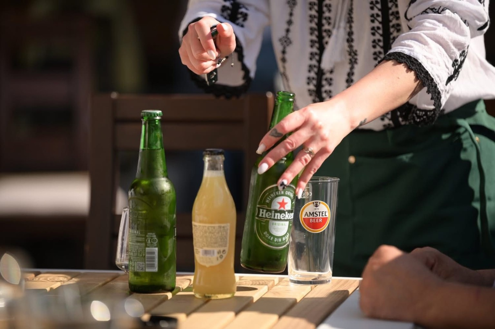
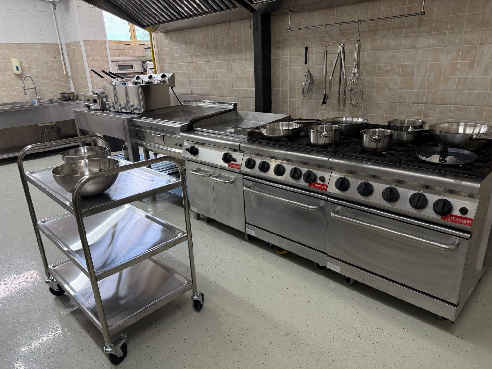
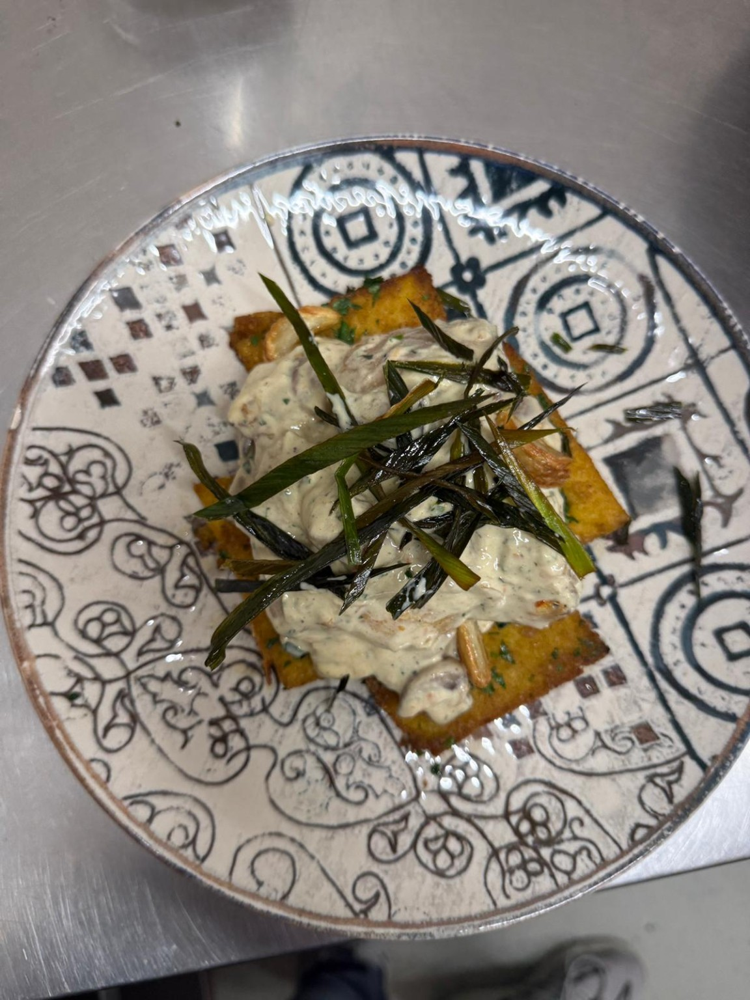

Restaurant tradițional în Craiova
Masa Boierului
Ospăț ca pe vremuri!
Bucate românești gătite cu poftă, platouri pentru familie și prieteni, grătar, ciorbe, terasă și atmosferă boierească.
Gust autentic
Ca la mesele de altădată
La Masa Boierului găsești preparate românești consistente: ciorbe drese cum trebuie, mâncăruri gătite, grătar încins și platouri mari pentru mese cu prietenii.
Rezervări
Rezervă o masă
Completează formularul, iar echipa Masa Boierului te contactează telefonic pentru confirmare.
În spatele gustului
Bucătărie modernă, curată și pregătită pentru volum
Pozele cu bucătăria arată aparatură profesională, spații curate și organizare bună pentru servire rapidă.
- Echipamente profesionale
- Flux curat de lucru
- Preparare zilnică


Atmosferă
Mese, povești și voie bună




Contact
Rezervă o masă
Restaurant Masa Boierului
Craiova, România
Telefon evenimente și rezervări: 0753 133 321
Program: Luni - Duminică, 10:00 - 23:00
Comenzi & rezervări
Poți suna direct sau poți trimite formularul de rezervare online.
Sună acum Deschide harta